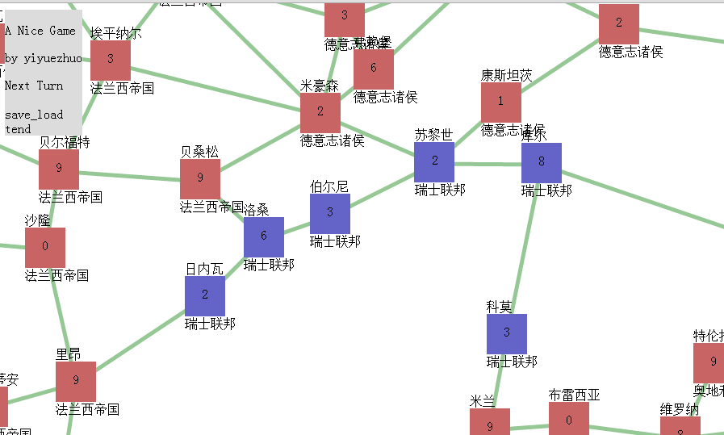

这里放了一些项目地址的演示，由于是GitHub page所以可能很长时间才能看到这个页面。
Chrome运行图示
游戏： 这个剧本是从我改造铁与血（一个一战剧本）的战争与和平1805战国史剧本中提取的信息，开始视角在左上角什么都没有（有菜单，如果菜单太大可能是没有执行完初始化），你默认是瑞士，可以移到大概地图中间看到蓝色的那一片就是你。点击区域有assign与transport命令，assign可以移动你的部分兵力到邻格（这里没限制只能移动到邻格为了调试方便，但最好按这个规则，AI是遵守的。）点击敌方所在格，如果有你的兵力与敌方兵力在同一格可以选择fight命令或bliz命令，发起战斗占领该格。伤亡是用兰彻斯特方程结合兵力算的，基本上就是相同敌人数量你数量越多你自己伤亡越小。按菜单的next turn就可以下回合（可能会花一点时间） 每回合每个地区自动产生1兵力，如果你觉得有一些机械的操作太烦可以用之前提到的transport命令，该命令可以将一个地区指向另一个地区（选择这个命令后点击另一个地区即可），每回合你开始操作前自动将能移动的兵力全移动到指向的地区。如果你度过了初始生存期可能会开始需要这个命令简化操作。 项目与源代码：
有两个部分,project1与project3，相比来说project1更像战国史原版，但project3开发的更长时间一点，是RISK风格的，也就是说每个地区有一个兵力数量，而不是将领驱动（project1是）的。 这个项目本来是想做战国史剧本信息提取器(如此之多的结构化数据资源你懂得，虽然我对它的某些写法无力吐槽，比如id居然可以是字符，而生年这些简直坑爹)，一开始是想转成民国无双剧本，不过没人关注，个人觉得继续做民国无双剧本太耗人工就没做下去，然后是project1，这个本意就是模仿战国史机制，不过AI做的很烂（只会合在一起移动），代码结构更烂，后面就没动力继续写了。 之后出于某个动机想写个也是点对点驱动但不是将领驱动的游戏，就把project1的1000多行代码中拿了300+行建了project3，自以为代码结构比以前好得多，也就能继续写下去了。project3只用了战国史剧本的势力和城的网络信息。
主要就是试图把IPython Notebook里的Markdown功能拿出来，不用每次开都启动半天服务器。。同时做到极简化，不过还是自带了十几个Markdown样式
the app